Ниже представлена демонстрация приложения, которое я написал для своей курсовой работы во время учебы в Пермском химико-технологическом техникуме в 2025 году. Приложение написано на фреймворке Spring Framework на базе языка Java. Использованная СУБД - MySQL. Репозиторий проекта находится по адресу https://github.com/SubVlad/CourseWork01
Там же находится пояснительная записка для курсового проекта "ИС_23_11_Субботин_Курсовая_5.docx", где можно ознакомиться с деталями курсового проекта.
Первое, что будет видеть гость – стартовая страница. На ней расположены приветствие и изображения, которые познакомят гостя с интерьером гостиницы. К верхней части страницы прикреплена шапка, которая остается наверху и всегда доступна гостю, пока тот пролистывает содержимое страницы. На ней расположены кнопки быстрой авторизации и регистрации, чтобы гость мог в любое время войти в систему. Окошко приветствия также служит дисплеем для сообщений, которые система будет выдавать гостью.
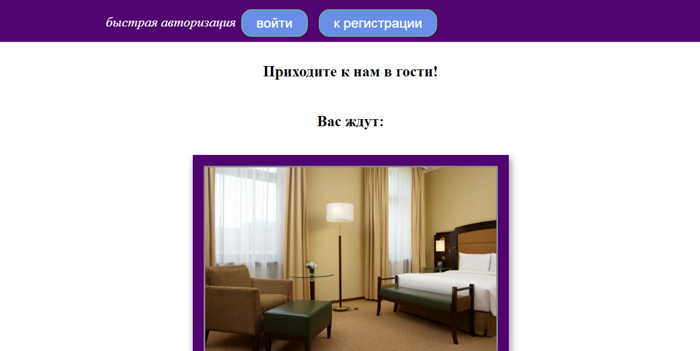 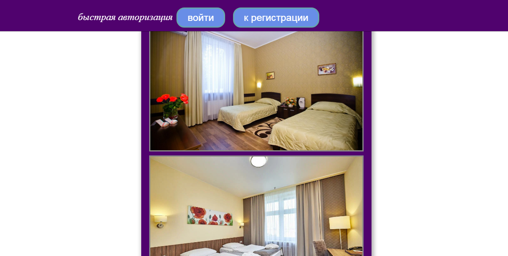 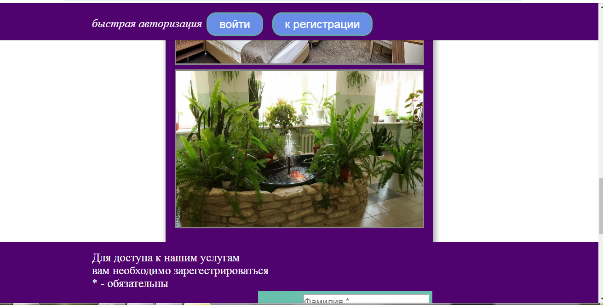Когда гость, пролистывая страницу, просмотрит весь интерьер, в самом низу страницы ему откроется предложение зарегистрироваться и форма регистрации
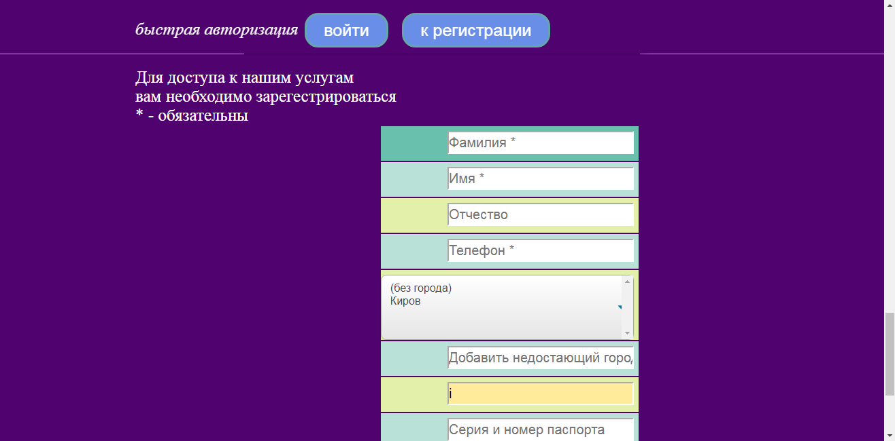 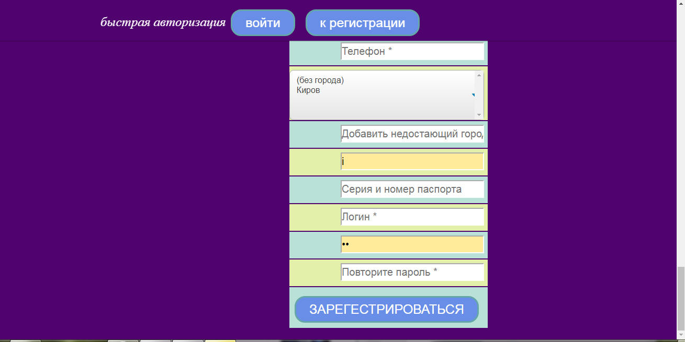Обязательными полями являются: фамилия, имя, телефон, логин и пароль. Необязательные поля: отчество, город отбытия, электронная почта, серия и номер паспорта. Гость обязан повторить пароль в соответствующем поле. Если пароли в двух полях не совпадают, система выдаст соответствующее сообщение
Если введенная электронная почта не соответствует стандарту («имя»@«ящик».«домен»), система предупредит об этом
В поле ввода телефонного номера должно быть введено одно число без букв и пробелов. В случае нарушения этого правила система выдаст соответствующее сообщение
Если гостем был выбран логин, который уже занят, система выдаст соответствующее сообщение
Когда все обязательные поля заполнены, и все правила ввода данных соблюдены, гость добавляется в систему и становится пользователем, о чем его оповестит система. Введенный пароль предварительно шифруется криптографическим ключом, прежде чем быть занесенным в базу данных
Первый пользователь системы получает права администратора, остальные – права клиента. Чтобы войти в систему, необходимо нажать кнопку «Войти» на шапке главной страницы. Откроется окно аутентификации, где требуется ввести логин и пароль. После нажатия кнопки «Вход» система перенаправляет пользователя на окно администратора либо клиента, в соответствии с правами доступа пользователя
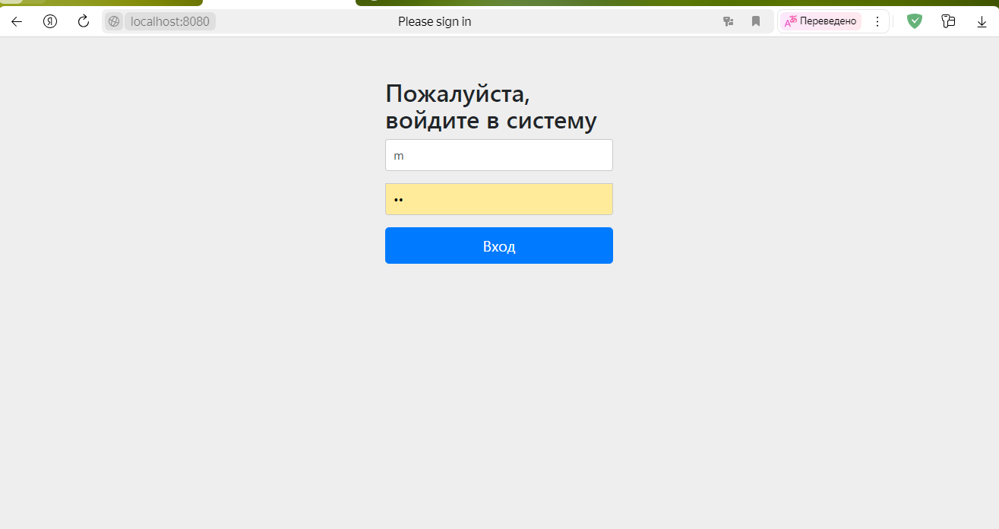При входе пользователя с правами администратора открывается страница администратора. В этом окне пользователю открываются следующие возможности: просмотр и изменение списка комнат, просмотр списка бронирований, просмотр списка заселений, просмотр списков пользователей – отдельно с правами администратора и отдельно с правами клиента. При нажатие на кнопки «Выйти» пользователь выходит из системы, и его перенаправляют обратно на главную страницу, после чего можно поменять пользователя. Эта кнопка доступна из любого окна, которое есть в системе.
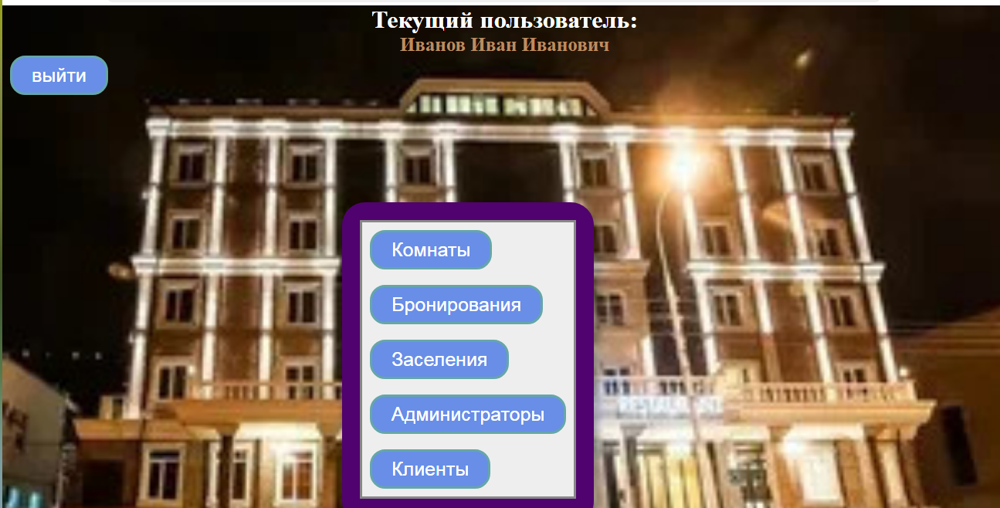Первое, что должен сделать администратор при начале работы с системой – это добавить в систему типы комнат и комнаты, потому что без этого клиенты не смогут создавать бронирования. Для этого надо нажать кнопку «Комнаты», после чего открывается список комнат в системе с указанием номера и типа комнаты. Тут расположены кнопки для добавления в систему комнаты и типа комнаты. Так же тут расположена кнопка для быстрого возврата в окно администратора «К окну администратора». Такая же кнопка есть на каждой странице, к которой открывается доступ из окна администратора
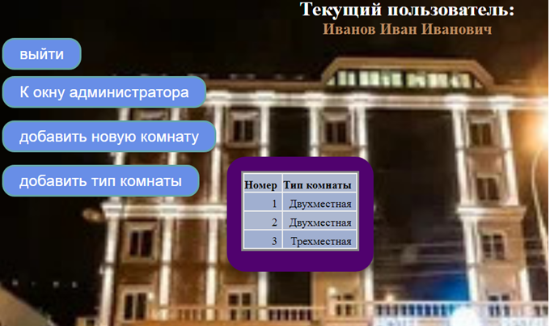Прежде всего, требуется добавить тип комнаты. Для этого надо нажать кнопку «Добавить тип комнаты», после чего открывается форма добавления типа комнаты . Здесь надо ввести название типа комнаты единственное поле ввода и нажать кнопку «Добавить тип комнаты». Эта кнопка перебросит пользователя обратно к окну списка комнат
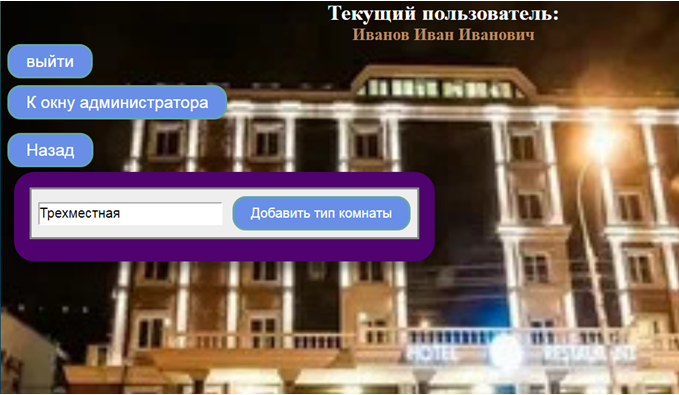Затем следует добавить комнаты в систему. Для этого надо нажать кнопку «Добавить новую комнату» в окне списка комнат, после чего открывается окно добавления комнаты. В открывшемся списке типов комнат надо выбрать требуемый тип и нажать кнопку «Добавить комнату». По нажатию на кнопку система перебросит пользователя в окно списка комнат
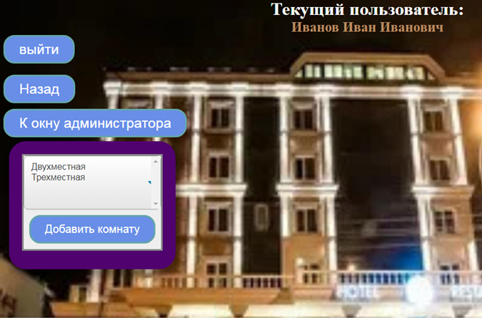При нажатии кнопки «Бронирования» в окне администратора откроется список бронирований всех клиентов. В этом окне администратор может посмотреть всю информацию о бронированиях, включая всех заселившихся персон по бронированию в выпадающем списке, вручную поменять статус бронирования или же оформить заселение на основе выбранного бронирования.
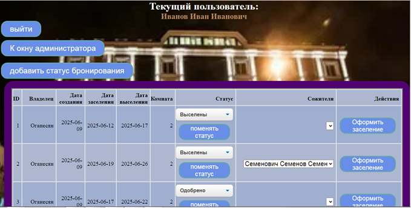При нажатии на кнопку «Добавить статус бронирования» открывается окно добавления статуса бронирования. В единственном открывшемся поле надо ввести желаемое название статуса. Статусы «На рассмотрении», «Одобрено», «Выселены», «Отменено пользователем» добавляются в систему автоматически при создании первого администратора.
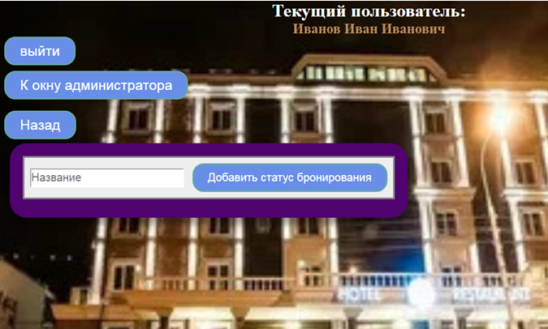При нажатии кнопки «Заселения» в окне администратора система перенаправляет пользователя в окно списка заселений. В этом окне администратор может просмотреть списки заселений. При нажатии на кнопку с фамилией клиента открывается информация по бронированию, на основе которого было основано заселение.
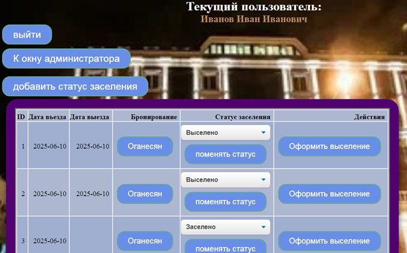В выпадающем списке можно вручную поменять статус заселения. Когда клиент покидает гостиницу, администратор должен оформить выселение, нажав у соответствующего заселения кнопку «Оформить выселение», после чего в колонке «Дата выезда» появляется текущая дата. Если по этому заселению клиент уже был выселен, об этом будет сообщено вверху страницы.
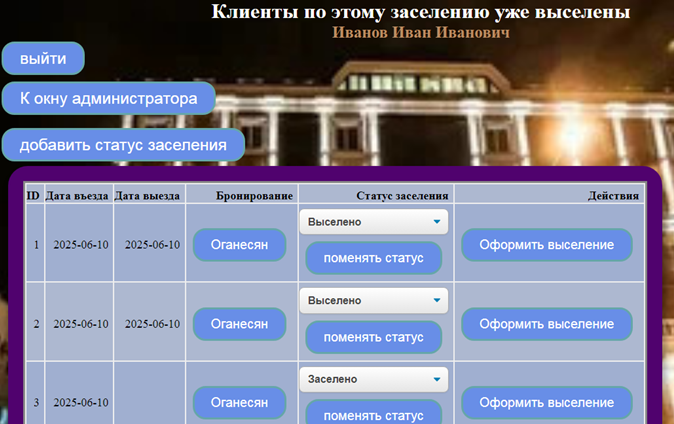При нажатии на кнопку «добавить статус заселения» открывается окно добавления статуса заселения. В единственное открывшееся поле надо ввести название статуса, затем нажать кнопку «Добавить статус заселения». После чего система перебросит пользователя в окно списка заселений. Статусы «Заселено» и «Выселено» автоматически добавляются в систему при создании первого администратора.
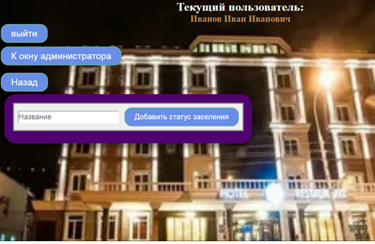При нажатии кнопки «Клиенты» в окне администратора появляется окно со списком пользователей с правами клиента.
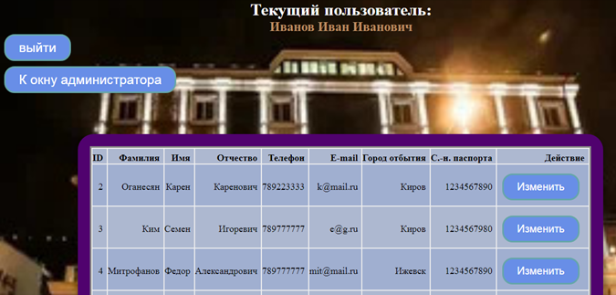При нажатии кнопки «Изменить» открывается окно, в котором можно изменить данные о пользователе. Здесь же можно поменять права доступа.
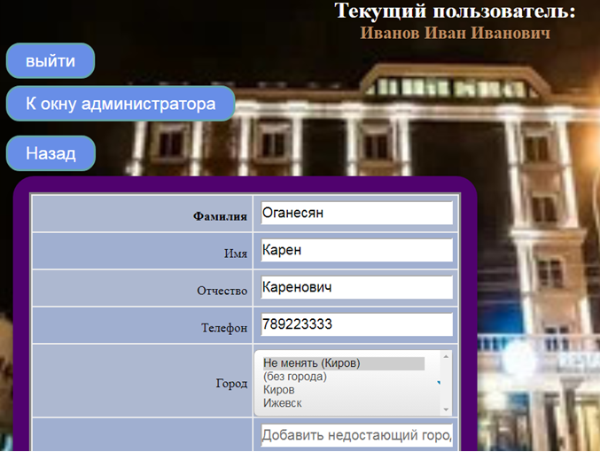При нажатии кнопки «Администраторы» в окне администратора появляется окно, аналогичное окну списка клиентов, но в котором только пользователи с правами администратора. При нажатии кнопки «Изменить» можно изменить его данные и права доступа, аналогично как в окне списка клиентов
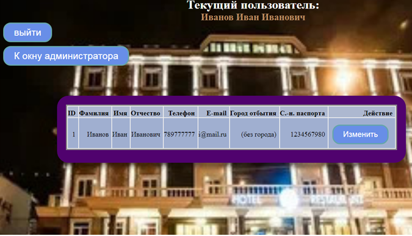При входе в систему пользователя с правами клиента открывается окно клиента. В этом окне пользователю открываются следующие возможности: оформить бронирование, посмотреть список своих бронирований, посмотреть список своих заселений.
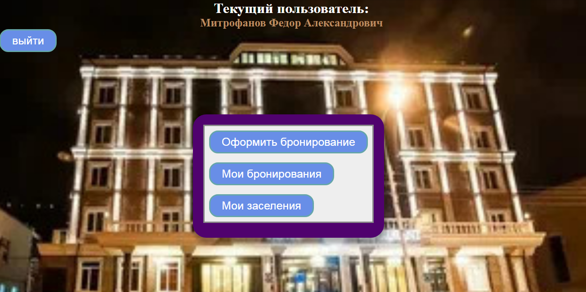При нажатии кнопки «Оформить бронирование» открывается первое окно оформления бронирования. На этом окне пользователь будет должен ввести дату предполагаемого приезда, количество дней, которое собирается провести в гостинице, а затем нажать кнопку «Перейти к комнатам». Также на этом окне есть кнопка «К окну клиента», которая возвращает к окну клиента, аналогичная таковой в окнах администратора. Такая же кнопка находится на всех окнах, доступных клиенту.
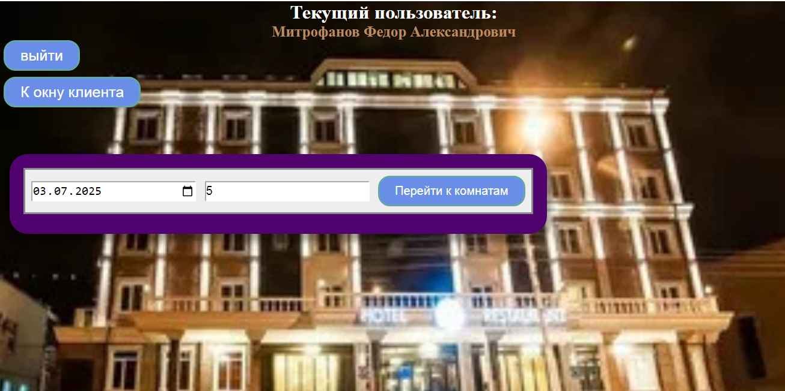Затем система перенаправит пользователя на второе окно оформления бронирования, где система предложит пользователю те комнаты, которые будут свободны на выбранный пользователем промежуток времени. Также на этом окне пользователь должен указать данные всех людей, которые заселятся с ним. На одно бронирование можно записать не более трех человек, исключая самого клиента. Клиент должен указать их фамилия, имена и отчества. Отчество является необязательным полем. После заполнения всех полей, требуется нажать кнопку «Забронировать».
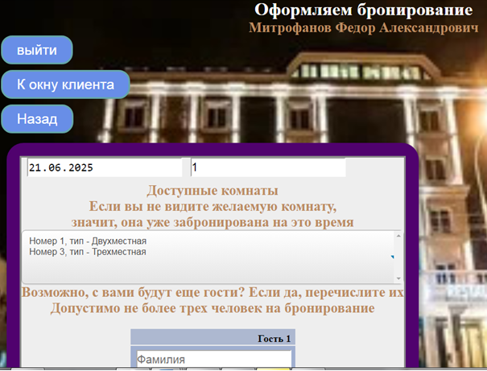 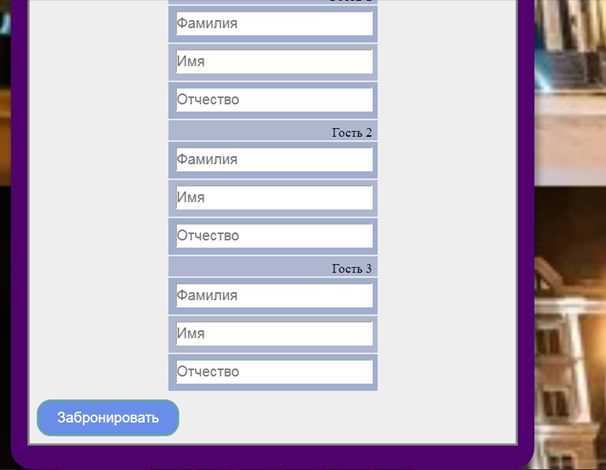При нажатии кнопки «Мои бронирования» в окне клиента открывается окно со списком всех бронирований, которые записаны за текущим пользователем. Здесь доступна вся информация о бронировании: даты прибытия и отбытия, номер комнаты, статус бронирования и записанные заселяющиеся персоны (сожители).
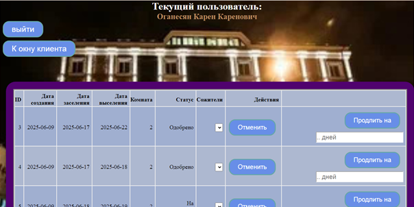На этом окне пользователь имеет возможность отменить бронирование, после чего оно пропадет из списка, а сообщение об этом будет отображено в верхней части страницы.
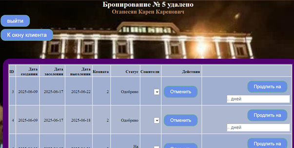Клиент не сможет удалить бронирование, которое уже одобрено администратором, и по которому уже оформлено заселение. При попытке удалить такое бронирование система выдаст соответствующее сообщение в верхней части страницы.
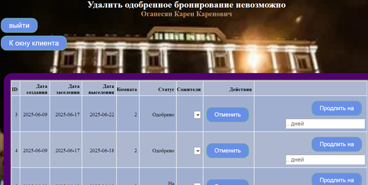При желании пользователь сможет продлить бронирование. Для этого надо указать количество дней продления в соответствующем поле и нажать кнопку «Продлить на», после чего пользователь будет перенаправлен на окно, аналогичное второму окну оформления бронирования, где ему будет предоставлен список комнат, которые будут свободны на выбранный пользователем период. Началом этого периода будет считаться конец выбранного в списке бронирования, которое хотят продлить. Список заселяющихся персон будет взят из выбранного для продления бронирования, и изменить его будет нельзя. После этого продление бронирования будет помещено в список бронирований как самостоятельное бронирование, которое также будет ожидать, когда его одобрит администратор.
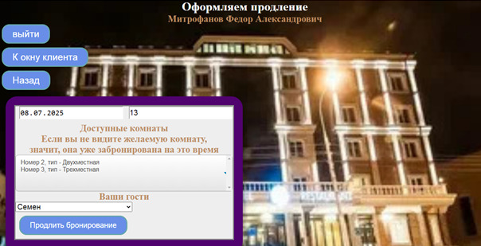При нажатии кнопки «Мои заселения» пользователю открывается окно списка его заселений. В этом окне пользователь сможет просматривать данные о своих заселениях, такие как даты фактического прибытия и отбытия, статус заселения и данные о бронировании, на основе которого оформлено это заселение.
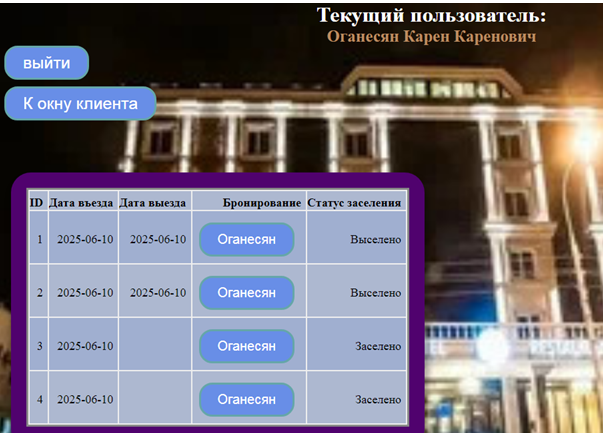